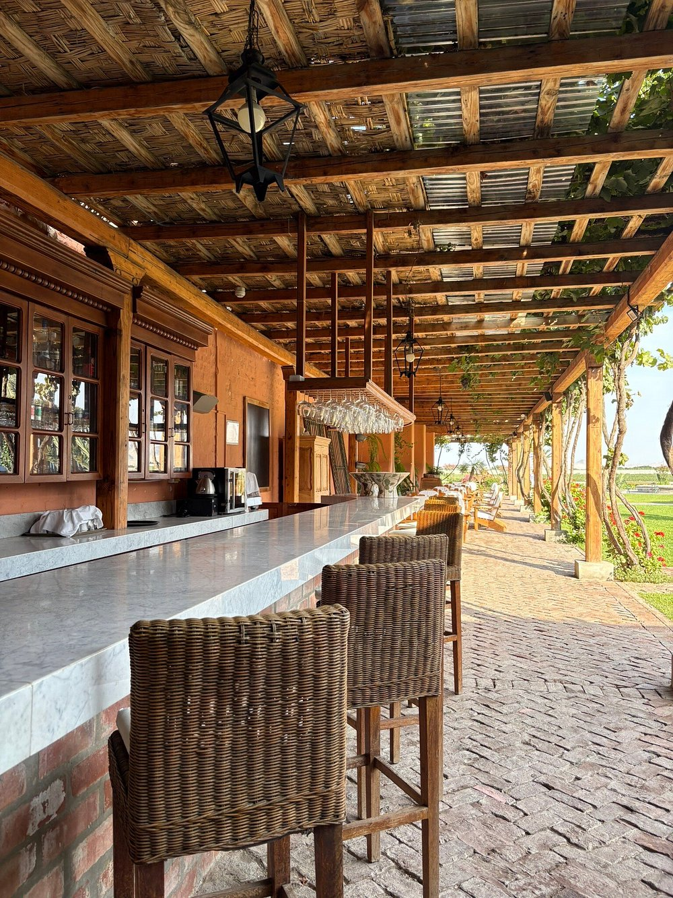

LA HISTORIA
Nuestra Herencia
Ubicado en el corazón del fértil Valle de Ica, El Intipalka —cuyo nombre en quechua significa "Valle del Sol"— nace como un homenaje a la generosidad de nuestra tierra y a la tradición vitivinícola centenaria de la familia Santiago Queirolo.
Nuestra terraza rústica, cobijada a la sombra de antiguas vides y con vista panorámica a los viñedos, te invita a disfrutar de historias compartidas y copas alzadas, celebrando la perfecta armonía entre la alta gastronomía peruana y la pasión por el buen vino.
DESCUBRE NUESTRA PROPUESTA